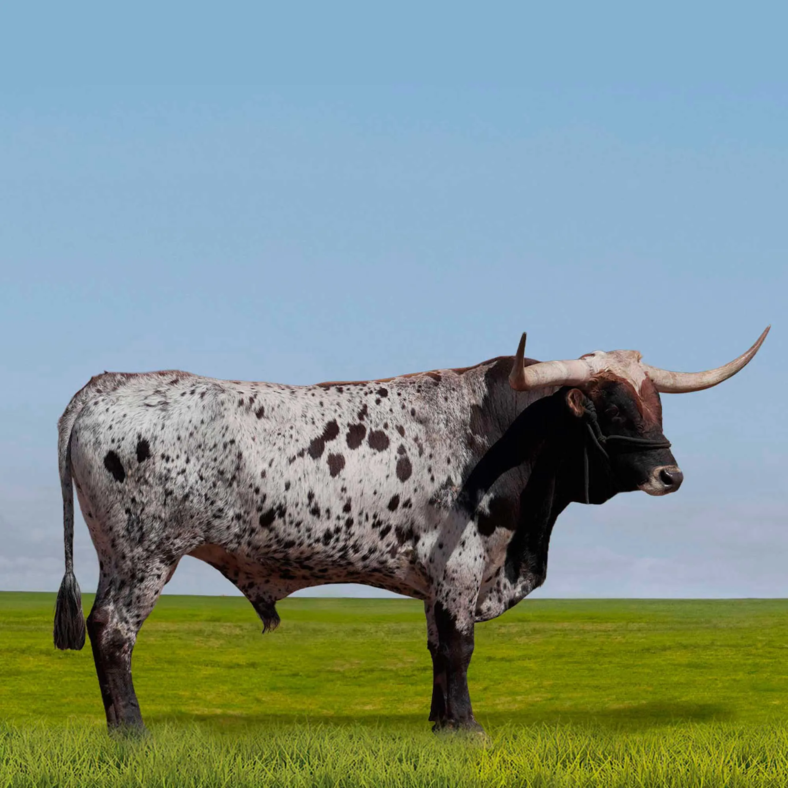

A Incrível Raça Texas Longhorn
por:Felippe rickli souza
O Texas Longhorn e uma raca de boi muito famosa conhecida pelos seus chifres gigantes que podem passar de dois metros de comprimento. Eles surgiram nos Estados Unidos, mas vieram de misturas de bois trazidos pelos colonizadores espanhois a muito tempo atras. Essa raca e extremamente forte e consegue viver muito bem em lugares secos e com pouca agua. Antigamente eles eram muito usados para o transporte de cargas e para a producao de carne. Hoje em dia, por causa da beleza e do tamanho dos chifres, eles servem muito para competicoes, exposicoes e tambem para fazendas de turismo. Uma grande curiosidade e que os chifres deles nunca param de crescer durante toda a vida do animal.